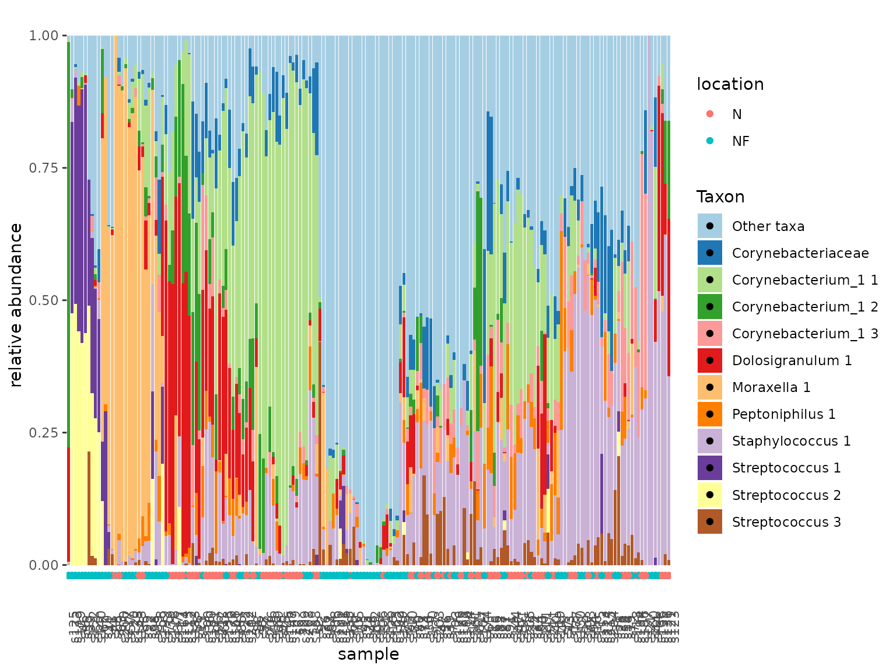

This guide explains how to perform some common microbial sequencing count data analysis tasks using tidytacos. We will illustrate those using a dataset with human microbiome samples from the upper respiratory tract (URT), taken from this paper by De Boeck et al. It contains nose as well as nasopharynx samples. Most samples were taken using a swab method, but a minority was taking with the aspirate method.
Philosophy of the package
A tidytacos object is simply a list of three tables:
- counts: These are the counts of reads for each taxon (OTU/ASV/phylotype) in each sample. Each row represents such a read count.
- samples: This table contains the sample metadata. Each row represents a sample.
- taxa: This table contains the taxonomy and other metadata for the taxa. Each row represents a taxon.
The package is called tidytacos because each of the tables is tidy: every row represents an observation and every column a variable (more on data tidying can be found at https://r4ds.hadley.nz/data-tidy.html#sec-tidy-data). For this quick start guide, we assume you are familiar with the tidyverse (especially dplyr and ggplot).
The main differences with the popular phyloseq package are:
- The abundance table of tidytacos is in long format, while the otu_table object of phyloseq is in wide (matrix) format. A tidy read count table is more compact for very sparse data (such as microbiome data), and also easier to handle and visualize within the tidyverse framework.
- All tables in tidytacos are data frames (technically tibbles). In phyloseq, each table has its own special data type (i.e. the classes “otu_table”, “tax_table” and “sample_data”). This makes it sometimes difficult to access the data directly and do simple stuff with it. Also, the otu_table and tax_table classes are based on the matrix type, while the sample_data class is based on the dataframe type. This also makes data manipulation sometimes unstraightforward.
- In a phyloseq otu table, sometimes the rows are the taxa and sometimes the columns. This can easily lead to errors.
Setting up
In case you haven’t installed tidytacos yet, it can be installed using devtools:
install.packages("devtools")
devtools::install_github("LebeerLab/tidytacos")For this guide, we only need to load two packages: tidytacos (of course) and the tidyverse set of packages.
library(tidyverse)
#> ── Attaching core tidyverse packages ──────────────────────── tidyverse 2.0.0 ──
#> ✔ dplyr 1.1.4 ✔ readr 2.1.5
#> ✔ forcats 1.0.0 ✔ stringr 1.5.1
#> ✔ ggplot2 3.5.1 ✔ tibble 3.2.1
#> ✔ lubridate 1.9.3 ✔ tidyr 1.3.1
#> ✔ purrr 1.0.2
#> ── Conflicts ────────────────────────────────────────── tidyverse_conflicts() ──
#> ✖ dplyr::filter() masks stats::filter()
#> ✖ dplyr::lag() masks stats::lag()
#> ℹ Use the conflicted package (<http://conflicted.r-lib.org/>) to force all conflicts to become errors
library(tidytacos)
#>
#> Attaching package: 'tidytacos'
#>
#> The following object is masked from 'package:dplyr':
#>
#> everything
#>
#> The following object is masked from 'package:tidyr':
#>
#> everythingThe first step will usually be the conversion our data into a usable
tidytacos format. If, for example, you used DADA2 as explained here,
you can hand off the data to tidytacos using from_dada().
You can also convert a phyloseq object to a tidytacos object using the
from_phyloseq()
function. More options to import and convert your data can be found here.
A tidytacos object is read and stored as three sparse tables
(counts-, taxa- and samples.csv). The sample table needs atleast a
sample_id column, the taxa table needs a
taxon_id column with atleast one other rank name column and
the counts table needs a sample_id, taxon_id
and counts column. The taxa table of a default tidytacos
object has the domain, phylum, class, order, family, genus and species
columns. Species here has a special place as it is often ignored by some
functions unless specified, due to the low resolution of short read 16S
rRNA gene sequencing data.
To read in existing data from a folder called ‘my_data’ you would run:
my_path <- system.file("extdata", "tidytacos", "leaf", package = "tidytacos")
# my_path <- "local/path/my_data"
taco <- read_tidytacos(my_path)Where you replace my_path with an actual path to your data. The path used here uses data in our package.
To write your data to a folder called “my_data_filtered” you can run:
taco %>% write_tidytacos("my_data_filtered")However, our example dataset is available in the tidytacos package and doesn’t need to be imported or converted. It is called “urt” and we start by inspecting the samples table:
glimpse(urt$samples)
#> Rows: 217
#> Columns: 9
#> $ run <chr> "20161207_ilke_urt100", "20161207_ilke_urt100", "20161207_…
#> $ condition <chr> "CON", "CON", "CON", "CON", "CON", "CON", "CON", "CON", "C…
#> $ participant <chr> "CON100", "CON100", "CON10", "CON10", "CON11", "CON11", "C…
#> $ location <chr> "NF", "N", "NF", "NF", "NF", "N", "NF", "NF", "N", "NF", "…
#> $ method <chr> "S", "S", "A", "S", "S", "S", "S", "S", "S", "S", "S", "S"…
#> $ plate <dbl> 3, 3, 1, 1, 1, 1, 1, 1, 1, 1, 1, 1, 1, 1, 1, 1, 1, 1, 1, 1…
#> $ passes_qc <lgl> TRUE, TRUE, TRUE, TRUE, TRUE, TRUE, TRUE, TRUE, TRUE, TRUE…
#> $ sample <chr> "CON100-NF-S", "CON100-N-S", "CON10-NF-A", "CON10-NF-S", "…
#> $ sample_id <chr> "s1", "s2", "s3", "s4", "s5", "s6", "s7", "s8", "s9", "s10…We then have a quick look at the total number of samples, ASVs, and reads in the tidytacos object:
tacosum(urt)
#> n_samples n_taxa n_reads
#> 217 1957 3873478Making a stacked barplot of a subset of samples
We can very easily create a plot to explore a subset of our samples (e.g., only nose samples taken with the swab method) in the following way:
urt %>%
filter_samples(location == "N", method == "S") %>%
tacoplot_stack()
The filter_samples function does what it says: filtering
samples. It will also delete taxa from the taxa table that have zero
total reads in the remaining samples. The tacoplot_stack
function returns a nice stacked bar plot visualization of the most
abundant taxa in our samples.
Subsetting dataset
Our next question for this dataset is to what extent nose and nasopharynx are linked from a microbiological point of view. To get an idea we can first visualize this:
urt_s <- urt %>% filter_samples(method == "S")
tacoplot_stack(urt_s)+
geom_point(aes(y=-0.02,color=location))
tacoplot_stack(urt_s, x = location) +
facet_wrap(~ participant, nrow = 10)
#> Warning in tacoplot_stack(urt_s, x = location): Sample labels not unique,
#> samples are aggregated.
First, we make sure to include only swab samples. We can then visualize the data in stacked bar plots. The tacoplot functions consist of ggplot function calls and therefore geoms and other ggplot features can be added.
Alpha diversity
To explore alpha diversity, let’s create a rarefied version of the dataset:
urt_rar <- urt %>%
add_total_count() %>%
filter_samples(total_count >= 2000) %>%
rarefy(2000) %>%
add_alphas()We can visualize alpha diversities of nose versus the nasopharynx:
The add_total_count function will add total sample read
numbers to the sample table.
The rarefy function will randomly subsample all samples
n times. It only works if the read count of each sample equals or
exceeds n. For determining ASV richness, we chose to rarefy first, but
this may depend on your data.
The add_alpha function can be used to add several
metrics of alpha diversity to the sample table or in this cas we use the
add_alphas to add all the currently supported metrics.
Next we will plot the resulting alpha diversities and group per location of sampling:
urt_rar %>%
tacoplot_alphas(location)
#> Warning: Removed 4 rows containing non-finite outside the scale range
#> (`stat_ydensity()`).
#> Warning: Removed 4 rows containing missing values or values outside the scale range
#> (`geom_point()`).
The tacoplot_alphas function will use any alpha metric that has been added by add_alpha(s) which it can find in the sample table.
Principal coordinates analysis
We would like to address the differences between nose and nasopharynx. We’re also more interested in genera than ASVs. A PCA might offer insight:
urt_genus <- urt %>%
filter_samples(method == "S") %>%
aggregate_taxa(rank = "genus")
tacoplot_ord_ly(urt_genus,location, samplenames = sample, dim = 3)
#> Warning in remove_empty_samples(.): Removed 2 empty samples.The aggregate_taxa function merges all rows of the taxa
table together at a specified taxonomic level, in this case the genus
level. As for all tidytacos functions, all other tables in the tidytacos
object are adjusted accordingly.
The tacoplot_ord_ly function will determine relative
abundances of taxa in the samples, and will then use Bray-Curtis
dissimilarities to ordinate samples in a 2-dimensional space based on
their taxonomic composition. The plotly “_ly” addition makes the plot
interactive, which is really nice for exploratory work. This also works
for other plot functions.
Relation between community composition and variables
A logical next question is to what extent the niche (nose versus nasopharynx) determines the community composition variability. Let’s not forget that everyone has their unique microbiome and include the variable “participant” in the model.
perform_adonis(urt_genus, c("participant", "location"), by="margin")
#> Permutation test for adonis under reduced model
#> Marginal effects of terms
#> Permutation: free
#> Number of permutations: 999
#>
#> adonis2(formula = as.formula(paste("counts_matrix", formula_RHS, sep = " ~ ")), data = metadata, permutations = permutations, by = "margin")
#> Df SumOfSqs R2 F Pr(>F)
#> participant 97 31.076 0.64174 1.8848 0.001 ***
#> location 1 3.066 0.06331 18.0372 0.001 ***
#> Residual 81 13.768 0.28432
#> Total 179 48.424 1.00000
#> ---
#> Signif. codes: 0 '***' 0.001 '**' 0.01 '*' 0.05 '.' 0.1 ' ' 1The perform_adonis function will perform a PERMutational
ANOVA to determine the effect of sample variables on the Bray-Curtis
dissimilarities of the communities. The result shows that participant is
a really important contributor to community composition (R squared =
0.65). Furthermore, there are consistent significant differences between
the communities of nose and nasopharynx (R squared = 0.06).
Differential abundance analysis
Next, we would like to know which of the 20 most abundant genera, are significantly more abundant in the nasopharynx compared to the nose.
urt_genus <- urt_genus %>% add_codifab(location, max_taxa = 40)
urt_genus$taxon_pairs <- filter(urt_genus$taxon_pairs, wilcox_p < 0.05)
tacoplot_codifab(urt_genus, NF_vs_N)
The add_codifab function will add a table called
taxon_pairs to the tidytacos object, with for each pair of a taxon and a
reference taxon, the differential abundance of the taxon between the two
conditions (with respect to the reference taxon).
The codifab_plot function returns a plot to visualize
differential abundance of taxa between conditions, compared to all other
taxa as references. We can observe that Haemophilus is most
likely to be typical for the Nasopharynx, whereas Anaerococcus
is most likely to be typical for the nose.
Of note, there are many differential abundance analysis methods out there and none of them are perfect. Interpret your results with care.